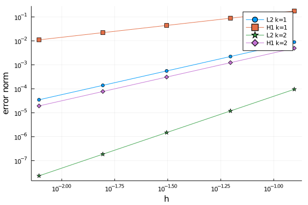

Tutorial 2: Code validation


In this tutorial, we will learn
- How to implement the method of manufactured solutions
- How to perform a convergence test
- How to define the discretization error
- How to integrate error norms
- How to generate Cartesian meshes in arbitrary dimensions
Problem statement
In this tutorial, we show how to validate a code using the well known method of manufactured solutions. For the sake of simplicity, we consider the Poisson equation in the unit square $\Omega\doteq (0,1)^2$ as a model problem,
We are going to consider two different manufactured solutions. On the one hand, we consider function $u(x)=x_1+x_2$, which can be exactly represented by the FE interpolation that we construct below. Thus, one expects that the obtained approximation error is near the machine precision. We are going to check that this is true in the code. On the other hand, we consider a function that cannot be captured exactly by the interpolation, namely $u(x)=x_1^3 + x_2^3$. Here, our goal is to confirm that the convergence order of the discretization error is the optimal one.
Manufactured solution
We start by defining the manufactured solution $u(x) = x_1+x_2$ and the source term $f$ associated with it, namely $f\doteq-\Delta(x_1+x_2)=0$.
using Gridap
u(x) = x[1] + x[2]
f(x) = 0We also need to define the gradient of $u$ since we will compute the $H^1$ error norm later. In that case, the gradient is simply defined as
∇u(x) = VectorValue(1,1)Note that we have used the constructor VectorValue to build the vector that represents the gradient. However, we still need a final trick. We need to tell the Gridap library that the gradient of the function u is available in the function ∇u (at this moment u and ∇u are two standard Julia functions without any connection between them). This is done by adding an extra method to the function gradient (aka ∇) defined in Gridap:
import Gridap: ∇
∇(::typeof(u)) = ∇uNow, it is possible to recover function ∇u from function u as ∇(u). You can check that the following expression evaluates to true.
∇(u) === ∇uNote: the definition of the gradient is optional. If not provided, the gradient will be computed with automatic differentiation.
Cartesian mesh generation
In order to discretize the geometry of the unit square, we use the Cartesian mesh generator available in Gridap:
domain = (0,1,0,1)
partition = (4,4)
model = CartesianDiscreteModel(domain,partition)The type CartesianDiscreteModel is a concrete type that inherits from DiscreteModel, which is specifically designed for building Cartesian meshes. The CartesianDiscreteModel constructor takes a tuple containing limits of the box we want to discretize plus a tuple with the number of cells to be generated in each direction (here 4 by 4 cells). Note that the CaresianDiscreteModel is implemented for arbitrary dimensions. For instance, the following lines build a CartesianDiscreteModel for the unit cube $(0,1)^3$ with 4 cells per direction
domain3d = (0,1,0,1,0,1)
partition3d = (4,4,4)
model3d = CartesianDiscreteModel(domain3d,partition3d)You could also generate a mesh for the unit tesseract $(0,1)^4$ (i.e., the unit cube in 4D). Look how the 2D and 3D models are built and just follow the sequence.
Let us return to the 2D CartesianDiscreteModel that we have already constructed. You can inspect it by writing it into vtk format. Note that you can also print a 3D model, but not a 4D one. In the future, it would be cool to generate a movie from a 4D model, but this functionality is not yet implemented.
writevtk(model,"model")If you open the generated files, you will see that the boundary vertices and facets are identified with the name "boundary". This is just what we need to impose the Dirichlet boundary conditions in this example.
These are the vertices in the model

and these the facets

As you can see in the pictures, the objects on the boundary are correctly tagged with the name "boundary".
FE approximation
We compute a FE approximation of the Poisson problem above by following the steps detailed in the previous tutorial:
order = 1
reffe = ReferenceFE(lagrangian,Float64,order)
V0 = TestFESpace(model,reffe,conformity=:H1,dirichlet_tags="boundary")
U = TrialFESpace(V0,u)
degree = 2
Ω = Triangulation(model)
dΩ = Measure(Ω,degree)
a(u,v) = ∫( ∇(v)⊙∇(u) )*dΩ
b(v) = ∫( v*f )*dΩ
op = AffineFEOperator(a,b,U,V0)
uh = solve(op)Note that we are imposing Dirichlet boundary conditions on the objects tagged as "boundary" and that we are using the manufactured solution u to construct the trial FE space. Not also that we are not explicitly constructing an Assembler object nor a FESolver. We are relying on default values.
Measuring the discretization error
Our goal is to check that the discretization error associated with the computed approximation uh is close to machine precision. To this end, the first step is to compute the discretization error, which is done as you would expect:
e = u - uhOnce the error is defined, you can, e.g., visualize it.
writevtk(Ω,"error",cellfields=["e" => e])This generates a file called error.vtu. Open it with Paraview to check that the error is of the order of the machine precision.

A more rigorous way of quantifying the error is to measure it with a norm. Here, we use the $L^2$ and $H^1$ norms, which are defined as
In order to compute these norms, we use again the ∫ function and the integration measure dΩ, namely
el2 = sqrt(sum( ∫( e*e )*dΩ ))
eh1 = sqrt(sum( ∫( e*e + ∇(e)⋅∇(e) )*dΩ ))The expression ∫( fun )*dΩ returns an object storing the cell contributions of the integral of the given function fun. To end up with the desired error norms, one has to sum these contributions and take the square root. You can check that the computed error norms are close to machine precision (as one would expect).
tol = 1.e-10
@assert el2 < tol
@assert eh1 < tolConvergence test
We end up this tutorial by performing a convergence test, where we are going to use all the new concepts we have learned. We will consider a manufactured solution that does not belong to the FE interpolation space. In this test, we expect to see the optimal convergence order of the FE discretization.
Here, we define the manufactured functions
p = 3
u(x) = x[1]^p+x[2]^p
∇u(x) = VectorValue(p*x[1]^(p-1),p*x[2]^(p-1))
f(x) = -p*(p-1)*(x[1]^(p-2)+x[2]^(p-2))Since we have redefined the valiables u, ∇u, and f, we need to execute these lines again
∇(::typeof(u)) = ∇u
b(v) = ∫( v*f )*dΩIn order to perform the convergence test, we write in a function all the code needed to perform a single computation and measure its error. The input of this function is the number of cells in each direction and the interpolation order. The output is the computed $L^2$ and $H^1$ error norms.
function run(n,k)
domain = (0,1,0,1)
partition = (n,n)
model = CartesianDiscreteModel(domain,partition)
reffe = ReferenceFE(lagrangian,Float64,k)
V0 = TestFESpace(model,reffe,conformity=:H1,dirichlet_tags="boundary")
U = TrialFESpace(V0,u)
degree = 2*p
Ω = Triangulation(model)
dΩ = Measure(Ω,degree)
a(u,v) = ∫( ∇(v)⊙∇(u) )*dΩ
b(v) = ∫( v*f )*dΩ
op = AffineFEOperator(a,b,U,V0)
uh = solve(op)
e = u - uh
el2 = sqrt(sum( ∫( e*e )*dΩ ))
eh1 = sqrt(sum( ∫( e*e + ∇(e)⋅∇(e) )*dΩ ))
(el2, eh1)
endThe following function does the convergence test. It takes a vector of integers (representing the number of cells per direction in each computation) plus the interpolation order. It returns the $L^2$ and $H^1$ error norms for each computation as well as the corresponding cell size.
function conv_test(ns,k)
el2s = Float64[]
eh1s = Float64[]
hs = Float64[]
for n in ns
el2, eh1 = run(n,k)
h = 1.0/n
push!(el2s,el2)
push!(eh1s,eh1)
push!(hs,h)
end
(el2s, eh1s, hs)
endWe are ready to perform the test! We consider several mesh sizes and interpolation order $k=1$ and $k=2$ (for $k=3$ the error will be close to machine precision, as before, except if you change the value of $p$ above).
el2s1, eh1s1, hs = conv_test([8,16,32,64,128],1);
el2s2, eh1s2, hs = conv_test([8,16,32,64,128],2);
nothing #hideWith the generated data, we do the classical convergence plot.
using Plots
plot(hs,[el2s1 eh1s1 el2s2 eh1s2],
xaxis=:log, yaxis=:log,
label=["L2 k=1" "H1 k=1" "L2 k=2" "H1 k=2"],
shape=:auto,
xlabel="h",ylabel="error norm")If you run the code in a notebook, you will see a figure like this one: 
The generated curves make sense. For a given interpolation order it is observed that the convergence of the $H^1$ error is slower that $L^2$ one whereas increasing the order makes convergence faster both in $L^2$ and in $H^1$. However, in order to be more conclusive, we need to compute the slope of these lines. It can be done with this little function that internally uses a linear regression.
function slope(hs,errors)
x = log10.(hs)
y = log10.(errors)
linreg = hcat(fill!(similar(x), 1), x) \ y
linreg[2]
endThe slopes for the $L^2$ error norm is computed as
slope(hs,el2s1)
slope(hs,el2s2)and for the $H^1$ error norm as
slope(hs,eh1s1)
slope(hs,eh1s2)If your run these lines in a notebook, you will see that the slopes for the $L^2$ and $H^1$ error norms are 2 and 1 for $k=1$ and 3 and 2 for $k=2$ respectively.
Congrats, another tutorial done!
This page was generated using Literate.jl.